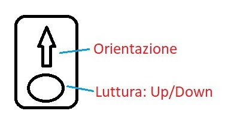

Leonard Susskind, Art Friedman - Meccanica quantistica - Pag.3
Sistema di misura
Il sistema ha due stati, due gradi di liberta: σ = up/down.
L'apparato di misura lo indichiamo con A. (Fig.1)
E' dotato di un indicatore per leggere la misura up/down e deve essere allineato lungo una direzione,
cioè ha una freccia che indica la sua orientazione. La sua orientazione influenza la misura.

Fig.1 Apparto di Misura A.
Misura dello spin di un elettrone
Fase 1 della misurazione
Vogliamo misurare lo spin di un elettrone, di cui non conosciamo nulla.
Lo spin dell'elettrone può dare solo due risultati: Up (+1), Down (-1).
Orientiamo l'apparato lungo l'asse z. Una scelta arbitraria.
Prima della misura la finestrella di A. è vuota.
Quando facciamo la misura l'elettrone interagisce con A,
e nella finestrella leggiamo +1 o -1. Supponiamo che il risultato sia +1 (Fig.2)
Fig.2 Misura dello spin
Fase 2 della misurazione
Resettiamo l'apparato di misura A, e la finestrella
di misura è vuota. Lasciamo l'apparato lungo +z e ripetiamo la misura con lo stesso elettrone.
Otteniamo ancora +1.
La misura è confermata. Anche se ripetessimo altre misure si otterrebbe sempre +1.
Fino a questo punto nessuna differenza con la fisica classica.
Fase 3 della misurazione
Ruotiamo l'apparto A di 180° (fig.3).
Fig.3 Misura dello spin
La lettura dello spin ora è -1. Abbiamo capovolto l'apparato e lo spin cambia da +1 a -1.
Considerazioni sulle misure
Lo spin potrebbe essere un vettore e l'apparato A
misura la componente di σ lungo il proprio il proprio asse, in questo caso z.
Fig.4 Misura dello spin
Fase 3 della misurazione
Ruotiamo A di 90° e ripetiamo le misure
sullo stesso elettrone più volte: otteniamo una sequenza casuale di +1 e -1.
Fig.5 Misura dello spin
Considerazioni sulle misure: aspetto quantistico
Se lo spin fosse un vettore dovremmo aspettarci la componente di σ lungo +x,
invece abbiamo una sequenza casuale di +1 e -1. L'interpretazione quantistica è che la prima misura di
σ definisce lo stato del sistema, le misure successive saranno sempre uguali alla prima misura,
nel nostro caso σz=+1. Lo spin può avere solo due valori +1 o -1, quindi se σz=+1, lungo x, σ deve essere zero.
La sequenza casuale di +1 e -1 si spiega dicendo che zero è il valore medio delle misure.
In media la componente lungo x dello spin è zero.
In generale diciamo che la prima misura prepara il sistema, definendone lo stato stato
che sarà mantenuto per tutta la restante storia del sistema.
Se ruotiamao A di un angolo θ e
ripetiamo una serie di misure otteniamo ancora una sequenza casuale di +1 e -1 ma ora
il valor medio sarà pari al cos(θ) cioè proprio la componente del vettore σ di modulo 1
lungo +z proiettato lungo la direzione θ, se questa è lungo un versore \( \vec n\ \)
allora usando la notazione di media per σ:
$$ \langle \sigma \rangle = \vec z\ \cdot \vec n\ $$
Fig.4 Componente lungo θ